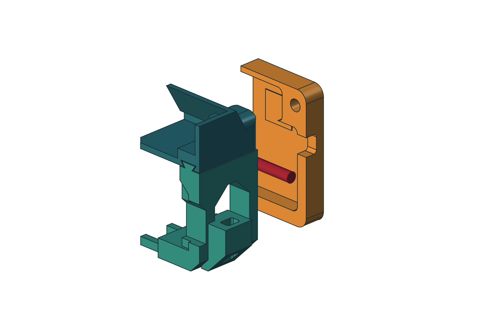
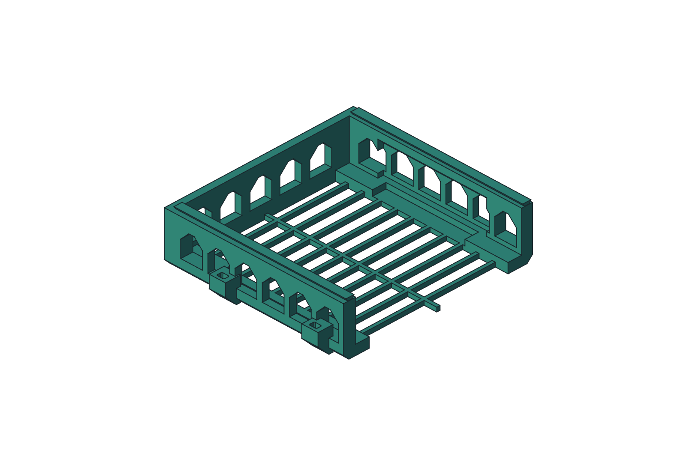

The original transition.
The wall pads extend beyond the arm’s 12 mm thickness. The section just above that layer was small.
Two lighter arms. Two open fan cradles. An optional, positively indexed airflow dam.
A new native FreeCAD fork, with measured size examples and removable printed hardware. Rev H continues below as the preserved ducted prototype.
Explore Minimalist ↓ View ducted Rev H ↓The wall pads extend beyond the arm’s 12 mm thickness. The section just above that layer was small.

Taller 32 mm wall pads and two 6 mm tapered webs per pad continue to the print bed face. Gold highlights added material; each arm remains one fused print.
At the sampled transition layer, each junction grows from 192 to about 416 mm². The complete nominal set adds 12.50 g and 17 m 36 s over M1.0. This geometry comparison does not establish physical strength.
Upgrade both arms and, if fitted, both dams with the matching clearance notch. The other sixteen parts keep their geometry. All six sizes and nine dam positions were rechecked.
Inspect the section data ↗Full nominal set
Orca ASA estimate
Less estimated filament
than the complete Rev H set
Native size × dam-position
checks passed
Nominal printed
mating clearance

The arms support the laptop. Open cradles hold two 120 mm fans at 45°. The upper dam is optional; its two halves and their keys and keepers can be removed as six separate parts.

Withdraw the keeper, slide out the two-rung key, move the dam, then reinstall both. The key carries the attachment load; the split keeper prevents withdrawal. Print the fit coupon before the full set.
All nominal plate paths were screened: no disconnected floating components. The expanded screen measures both bridge moves and overhang-wall paths; those results are listed in the release evidence. Native parts, mesh closure, STEP roundtrips, service clearances and plate placement were checked.
Physical fit, printed retention, long-term ASA creep, wall anchors and cooling performance still need qualification. The section calculation reports stress demand; it does not establish a load rating.
Download the eight-piece fit coupon plate ↓Small details. A much more deliberate assembly.
Rounded transitions, consistent clearances and print-aware reliefs — rebuilt live, around the arms already on the printer.
Explore the actual CAD ↓Measured fan-interface
and rail-to-arm gaps
Valid installed solids
in the Rev H STEP
Fully constrained
native sketches
Change to either
printed arm

Editable sketches and native features, shared design parameters, installed part placements, and a separate measured-fit review sheet.
Live edits were grouped into complete operations to avoid a recompute after every small step. The application log and saved validation reports kept the result reviewable.

Matte teal materials, technical edges, a solid lighter background and a Fusion-inspired command ribbon. Installed Fusion definitions have also been inventoried; this screenshot shows the current approximation.
The H mesh has 18.2 million cells with 0.25 mm edge targets. Expanded mesh checks fail, and the diagnostic restart completed only 0.0203084 ms of the planned 2 ms. This is a commissioning checkpoint: shedding, Bernoulli suction and validation are not established.
Open the Rev H report, raw samples, plots and four-frame startup animation ↗
From the angled fan inlets, through the rear plenum, toward the laptop intake and hinge outlet. Actual simulation plots make the airflow assumptions visible.
This is an uncalibrated, non-thermal baseline study. The 3D run reached its iteration limit without meeting the strict convergence target. It does not establish cooling performance, and no accepted Revision H airflow result is presented here. The Rev H transient commissioning report is now available: 18,219,444 cells, 0.25 mm edge targets, failed expanded mesh checks, and only 0.0203084 ms completed of the planned 2 ms. Its raw samples, plots and four-frame startup animation are diagnostic evidence. Shedding, Bernoulli suction and validation are not established. Assumptions and full run notes ↗
Revision H: three R12 airway blends per duct, with R14 exterior support. Sampled new curved walls remain above 1.60 mm and new curved overhangs below 40° in the inlet-down print orientation. See the geometric checks ↗
| Interface / check | Result |
|---|---|
| Cap ↔ duct · left + right | 0.300 mm |
| Cap ↔ tray · left + right | 0.300 mm |
| Tray ↔ duct · left + right | 0.300 mm |
| Rail ↔ frozen arm · left + right | 0.300 mm |
| Four duct keys ↔ frozen receivers | ≥ 0.300 mm |
| Unintended assembly interference | 0 mm³ |
| Laptop, fan + wall-driver interference | 0 mm³ |
| Sampled insertion + service motions | PASS |
A rounded groove at the mating edge lets the fan connector stay outside. Two zip-tie anchors on each tray route the wire along its outside rail and stay put when the cover comes off. Replace covers 05/06 and trays 09/10; keep the arms, ducts, rails, pins and optional H-R1 retainers.

Lay the wire in before fitting the cover. The tray closes the passage; no connector needs to be threaded through a hole.

One near the exit, one farther along the outside rail. Leave slack for servicing and keep the cable clear of the rotor.
The small corner coupon reproduces the groove, tray, duct latch and pin. Geometric checks use a 4 mm cable with 0.5 mm minimum clearance; actual fit, abrasion and tie-lug strength remain untested.
Print and fit the coupon ↗Two external side bars and two keyed keepers retain the Rev H ducts and upper rails. They use existing arm windows; all fourteen Rev H parts keep their geometry. Start with the short fit coupon on your printed right arm.

Slide the bars inward, then insert the keepers from below. Removing one bar releases both the duct and rail on that side; support both during service.

Two keys limit rotation; a lower heel and wider upper stop preserve overlap. The green keeper foot catches the inner gusset face. Physical fit, retention and warm ASA behavior remain untested.
The two-key coupon and keeper take an estimated 13.92 g and 39 minutes in Orca. Test them directly on the printed right arm before making the complete bars.
The complete four-part plate is 59.21 g and about 2 hours 14 minutes. Keep the supplied orientation and inspect the slice for your actual ASA spool.
Open the printing steps ↗Automatic bridge direction ran lengthwise along the long dovetail slots. In the supplied orientation, set both bridge directions to 180°, with Relative bridge angle and Align infill direction to model off. The corrected left and right slices have a maximum unsupported span of 5.19 mm and no disconnected floating components in the deposited-path screen.

This verifies geometric toolpaths, not ASA bridge quality. Download all 14 oriented STEP files, corrected settings and Orca previews ↓
Closed STL meshes, placed for the documented print orientation. Checked against the 256 mm bed, an 8 mm brim and the cutter exclusion.
The printed arms are not replaced. Original caps and pins remain unchanged. These six files supersede the corresponding older parts in print_ready/.
Get the editable FreeCAD model ↗
Download the review notes ↓